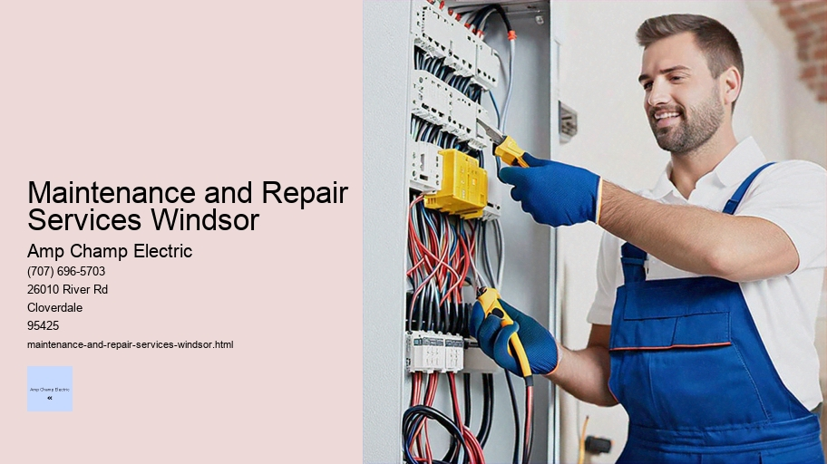

News
Electrical Installation Healdsburg
Electrical Installation Healdsburg
Electrical Installation Santa Rosa
Electrical Installation Cloverdale
Electrical Installation Geyserville
Electrical Installation Windsor
Maintenance and Repair Services Healdsburg
Maintenance and Repair Services Healdsburg
Maintenance and Repair Services Santa Rosa
Maintenance and Repair Services Cloverdale
Maintenance and Repair Services Geyserville
Maintenance and Repair Services Windsor
Electrical Safety Inspections Healdsburg
Electrical Safety Inspections Healdsburg
Electrical Safety Inspections Santa Rosa
Electrical Safety Inspections Cloverdale
Electrical Safety Inspections Geyserville
Electrical Safety Inspections Windsor
Energy Efficiency Upgrades Healdsburg
Energy Efficiency Upgrades Healdsburg
Energy Efficiency Upgrades Santa Rosa
Energy Efficiency Upgrades Cloverdale
Energy Efficiency Upgrades Geyserville
Energy Efficiency Upgrades Windsor
Specialty Electrical Services Healdsburg
Specialty Electrical Services Healdsburg
Specialty Electrical Services Santa Rosa
Specialty Electrical Services Cloverdale
Specialty Electrical Services Geyserville
Specialty Electrical Services Windsor
About Us
Contact Us

Maintenance and Repair Services Windsor
Smoke Detector Installation
Maintenance and Repair Services: Ensuring Longevity and Efficiency
In the bustling world we inhabit, maintenance and repair services stand as silent sentinels ensuring that our lives run smoothly. From the cars we drive to the appliances we use and the buildings in which we live and work, all require regular attention to function at their optimum levels.
Circuit Design and Analysis
This essay will explore the importance of these services, their various forms, and how they impact our daily lives.
At its core, maintenance is a preventive strategy designed to keep systems running efficiently and effectively over time. It involves routine checks, adjustments, cleaning, lubrication, and parts replacement. The objective of regular maintenance is to avoid larger issues by catching potential problems early on before they develop into costly repairs or result in catastrophic failure.
Repair services, on the other hand, are corrective measures taken when something has already gone wrong. When a system breaks down or malfunctions due to wear and tear or unforeseen circumstances, repair services step in to restore functionality. These services involve troubleshooting to identify the root cause of an issue followed by appropriate interventions such as part replacements or structural fixes.
The sectors that rely heavily on maintenance and repair services are vast. In manufacturing industries, machinery requires constant upkeep to ensure production lines run continuously without interruption. In real estate management, building infrastructure such as HVAC systems (Heating Ventilation and Air Conditioning), elevators, plumbing networks need ongoing service checks for safety reasons as well as comfort for occupants.
Within transportation networks – be it automotive vehicles or public transit systems like trains or buses – both maintenance and repair are critical for passenger safety as well as adherence to regulatory standards set forth by government agencies overseeing transportation safety.
Residentially speaking; homeowners often subscribe to regular maintenance plans for major home systems like heating or air conditioning units while also relying on repairmen when sudden issues arise with electrical wiring or roofing integrity after a storm.
Technology too isn't immune from this cycle of care; our digital devices – laptops, smartphones – demand periodic software updates alongside hardware check-ups if dropped or damaged.
An intriguing aspect of maintenance culture is its evolution alongside technological advancements. For example; predictive maintenance utilizes data analytics tools powered by sensors installed within equipment providing real-time monitoring capability leading up-to improving operational uptime through preemptive servicing suggestions based on performance metrics rather than fixed schedules alone.
Moreover; smart technologies embedded within modern products allow consumers direct interaction with manufacturers via internet connectivity enabling easier diagnostics procedures through remote assistance features thus revolutionizing customer support experiences compared traditional methods used previously where physical presence was required necessarily at site locations where issues occurred originally necessitating travel costs plus additional time spent during resolution processes overall extending downtime periods unnecessarily whereas now virtual solutions can be implemented swiftly reducing inconvenience significantly meanwhile enhancing satisfaction levels amongst end-users alike drastically too hence why embracing innovation within this realm remains paramount moving forward indeed!
The environmental impact cannot be ignored either: well-maintained machines operate more efficiently which translates into energy savings reducing carbon footprint simultaneously when considered across millions of devices globally active every single day cumulatively making substantial differences toward conservation efforts worldwide ultimately!
In conclusion; Maintenance & Repair Services form an invisible yet crucial backbone supporting contemporary society's complex structures seamlessly whilst behind-the-scenes largely unnoticed until disruptions occur jolting us back into reality reminding everyone about their significance afresh anew gratefully so! Without these essential activities underpinning everything else many conveniences taken granted today wouldn't exist whatsoever therefore appreciation must be given accordingly towards those professionals dedicated towards keeping everything running like clockwork day-in day-out tirelessly thanklessly oftentimes - heroes unsung truly!
Electrical Safety Inspections Healdsburg
Title: Troubleshooting Electrical Faults and Failures
The modern world runs on electricity. It powers our homes, industries, and the devices we rely on daily. However, as with any complex system, things can go wrong. Electrical faults and failures can range from minor inconveniences to major hazards that can cause significant damage or even put lives at risk. Troubleshooting these issues is a critical skill for electricians, technicians, and savvy homeowners alike. In this essay, we will explore the methods and mindset required for effective troubleshooting of electrical problems.
Understanding the Basics:
Before diving into troubleshooting techniques, it's important to have a solid understanding of basic electrical concepts such as voltage, current, resistance, and how they interact within circuits. Knowledge of safety protocols cannot be overstated; working with electricity requires respect for its potential dangers.
Common Symptoms:
Electrical problems often manifest themselves through symptoms like flickering lights, non-functioning outlets, tripping circuit breakers or blown fuses, strange noises from electrical equipment or wiring smells of burning plastic which could indicate overheating wires.
Initial Assessment:
When an electrical fault occurs, the first step in troubleshooting is to assess the situation carefully. Isolating the problem area helps in narrowing down potential causes. For example if only one light fixture isn't working while others are fine it might point towards a local issue rather than a more widespread problem like an overloaded circuit.
Using Diagnostic Tools:
Effective troubleshooting relies heavily on diagnostic tools such as multimeters which measure voltage current resistance continuity testers which check if there's a complete path (continuity) for electricity flow clamp meters test amperage without needing to disconnect anything infrared thermal cameras find hot spots caused by excessive resistance or overloading.
Systematic Approach:
A systematic approach involves checking each component in sequence based on how likely it is to be the source of failure starting with most obvious culprits moving onto less likely ones until you find defective part This way you don't overlook simple solutions before delving into more complicated repairs.
Understanding Wiring Diagrams:
Electrical Maintenance
For more complex systems understanding wiring diagrams is essential These diagrams provide roadmap showing how components are connected This knowledge allows troubleshooters to follow flow power identify where breaks disruptions may occur.
Repair vs Replacement Decisions:
Once faulty component identified decision must made whether repair replace Sometimes fixing loose wire tightening connection sufficient Other times entire component needs replacing due wear tear damage cost-benefit analysis should guide decision considering factors like age system availability parts costs labor downtime associated with different options.
Preventative Measures & Maintenance:
An ounce prevention worth pound cure Regular maintenance scheduled inspections reduce likelihood unexpected breakdowns Installing proper protection devices such surge protectors GFCI (Ground Fault Circuit Interrupter) outlets helps prevent faults from occurring first place By understanding loads systems designed handle avoiding overloading circuits life span equipment extended reducing chances failure.
In conclusion troubleshooting electrical faults failures combination technical knowledge practical skills patience careful observation Employing methodical approach using right tools ensures that problems can be diagnosed quickly accurately resolved safely Ultimately goal not just fix immediate issue but also understand underlying cause take steps mitigate future risks maintaining reliable safe operation all our electrical systems.
Maintenance and Repair Services Windsor - Schematic Wiring
Multimeter Usage
Journeyman Electrician
Transformer Installation and Maintenance
Whole House Rewiring
Motion Sensors
Electrical Troubleshooting
electrical-installation-healdsburg.html
electrical-installation-santa-rosa.html
electrical-installation-cloverdale.html
electrical-installation-geyserville.html
electrical-installation-windsor.html
maintenance-and-repair-services-healdsburg.html
maintenance-and-repair-services-santa-rosa.html
maintenance-and-repair-services-cloverdale.html
maintenance-and-repair-services-geyserville.html
maintenance-and-repair-services-windsor.html
electrical-safety-inspections-healdsburg.html
electrical-safety-inspections-santa-rosa.html
electrical-safety-inspections-cloverdale.html
electrical-safety-inspections-geyserville.html
electrical-safety-inspections-windsor.html
energy-efficiency-upgrades-healdsburg.html
energy-efficiency-upgrades-santa-rosa.html
energy-efficiency-upgrades-cloverdale.html
energy-efficiency-upgrades-geyserville.html
energy-efficiency-upgrades-windsor.html
specialty-electrical-services-healdsburg.html
specialty-electrical-services-santa-rosa.html
specialty-electrical-services-cloverdale.html
specialty-electrical-services-geyserville.html
specialty-electrical-services-windsor.html
privacy-policy.html
sitemap.html
sitemap.xml
about-us.html
feed.xml
Regular electrical system inspections
Regular Electrical System Inspections: Ensuring Safety and Efficiency
In the modern world, electricity is the lifeblood of our homes and businesses. It powers our appliances, lights our rooms, and runs our computers. With electricity being such an integral part of everyday life, it's easy to take for granted the complex system of wires, circuits, and devices that make it all possible. However, this system requires regular maintenance to ensure safety and efficiency. Regular electrical system inspections are a critical aspect of this maintenance.
Why are electrical inspections important? First and foremost, safety is the paramount concern. Faulty wiring or malfunctioning electrical systems can lead to fires or electrocution, both of which pose severe risks to occupants' well-being. According to the National Fire Protection Association (NFPA), electrical failures or malfunctions are leading causes of house fires in the United States. Regular inspections help identify potential hazards before they become dangerous.
Furthermore, these inspections also serve to ensure that electrical systems operate efficiently. An optimized system uses less energy which not only saves money on utility bills but also reduces strain on power grids and contributes to environmental sustainability by minimizing wasteful consumption.
So what does a regular inspection entail? A qualified electrician will examine several components:
1. Wiring integrity: The electrician checks for any signs of wear and tear on wires—fraying insulation or rodent damage—that could expose live wires or create short circuits.
2. Circuit breaker functionality: Circuit breakers should properly trip when a circuit is overloaded. Testing them ensures they work as intended to prevent overheating and potential fires.
3. GFCI (Ground-Fault Circuit Interrupter) outlets: These devices protect against electric shock by breaking the circuit when there's an imbalance in current flow. They're particularly important in areas with moisture like bathrooms or kitchens.
4.
Photovoltaic Systems Installation
Surge protection: Power surges can damage electronics; inspectors verify that surge protectors are installed where necessary.
5. Compliance with codes: Building codes evolve over time as new safety standards emerge; inspectors ensure that your home's electrical system conforms to current local regulations.
The frequency of these inspections depends on various factors such as the age of your building, usage patterns, and whether you've performed significant renovations recently which may have impacted your electrical infrastructure.
Power Quality Analysis
For homeowners, it’s recommended to have a thorough inspection every 3-5 years at minimum unless specific issues arise that would necessitate earlier attention. Businesses might require more frequent checks due to higher demands placed on their systems daily—and some industries have strict regulatory requirements dictating their inspection schedules.
Aside from scheduled inspections based on time intervals, certain events might prompt an immediate review:
- After purchasing a new home
- When installing large appliances
- After a major storm has potentially damaged wiring
- If fuses blow or circuit breakers trip frequently
Qualified professionals must carry out these assessments because working with electricity carries inherent dangers—even small oversights can result in severe consequences.
In summary, regular electrical system inspections are not merely about adhering to regulations; they're about assuring peace of mind for homeowners and business owners alike—knowing their environments are safe from fire risks due to faulty wiring while maintaining efficient operation that conserves energy resources.
By investing time into routine check-ups conducted by experts skilled in navigating through complex webs woven by today's intricate power networks—you safeguard your property against unforeseen mishaps while upholding its optimal performance level amidst growing technological advancements where reliable electric supply remains indispensable.
Repair of damaged wires or components
Repairing damaged wires or components is a crucial aspect of maintaining the functionality and safety of various systems in our daily lives, from household appliances to large-scale industrial machinery. The intricate process involves a blend of technical skills, precision, and an understanding of electrical principles to restore devices or networks to their optimal working condition.
The essence of repair lies in its ability to extend the life cycle of products, reduce waste, and promote sustainability. It's not only about fixing what’s broken but also about preserving resources and preventing hazards that may arise from faulty electrical work.
When we speak about repairing damaged wires or components, we delve into a world where detail-oriented troubleshooting meets careful craftsmanship. The first step in this meticulous process is diagnosis – identifying the root cause of the malfunction.
Backup Generators
Expert technicians use tools like multimeters to measure voltage, current, and resistance; thus pinpointing areas that have deviated from their intended function.
Once the issue has been identified, it's time for preparation. Safety is paramount when dealing with electricity. Technicians ensure that power sources are disconnected before proceeding with any hands-on work. This practice protects both the repairperson and the integrity of the device being serviced.
The actual repair procedure varies depending on the type of damage encountered. For instance, if a wire is frayed or cut, it may require stripping away insulation carefully using wire strippers, twisting together strands (if stranded wire), soldering connections back together for continuity, and then neatly re-insulating with heat-shrink tubing or electrical tape to prevent future short circuits.
In cases where electronic components themselves are damaged - such as capacitors, resistors or integrated circuits – replacement often becomes necessary. Removing failed components without causing further damage demands expertise; soldering irons must be wielded with finesse to avoid lifting tracks off printed circuit boards (PCBs) or overheating other sensitive parts nearby.
However complex these tasks might be though they're essential steps towards restoration. And while some might see them merely as part and parcel of technical upkeep there's an artistry involved too—an elegance in how each twist splice solder joint contributes toward resurrecting machines that serve us so faithfully.
Beyond technical prowess repairing damaged wires/components carries ethical dimensions as well; it champions reusability over disposability encouraging us all to think twice before discarding items that could otherwise be given new leases on life through skilled intervention.
To conclude effective repair breathes fresh vitality into compromised systems whether by mending severed connections within electronic gadgets restoring robustness across power lines servicing vehicles' intricate wiring harnesses these acts reinforce our reliance on electricity while underscoring human ingenuity's role in overcoming material limitations one precise fix at a time
Replacement of outdated electrical equipment
Title: The Imperative of Updating Outdated Electrical Equipment
Introduction:
The relentless march of technological advancement has rendered many once cutting-edge electrical systems obsolete. In our modern era, characterized by rapid innovation and a heightened awareness of safety and efficiency, the replacement of outdated electrical equipment is not merely a matter of keeping up with the times—it is an imperative for ensuring reliability, safety, and economic well-being. This essay explores the reasons for replacing outdated electrical equipment and the benefits it brings to individuals, businesses, and society at large.
Understanding Obsolescence in Electrical Equipment:
Electrical equipment becomes outdated for several reasons. Advances in technology lead to more efficient systems that consume less energy and provide better performance. Regulatory changes often mandate higher safety standards that older equipment cannot meet. Moreover, the natural wear and tear degrade components over time, leading to increased maintenance costs and potential failure risks.
Safety Concerns:
Outdated electrical systems pose significant safety hazards. Aging wiring can become brittle and prone to short circuits or fires. Old circuit breakers may fail to trip during overload conditions or faults, which can also result in dangerous fire outbreaks. By replacing old equipment with newer models designed with advanced safety features such as arc-fault circuit interrupters (AFCIs) and ground-fault circuit interrupters (GFCIs), we significantly reduce these risks.
Energy Efficiency:
Modern electrical devices are designed to be much more energy-efficient than their predecessors. Replacing outdated motors, lighting fixtures, transformers, and HVAC units can lead to considerable energy savings.
Electrical Repair
Not only does this reduce operating costs for businesses but it also lowers household utility bills—and on a larger scale—diminishes the ecological footprint by reducing demand on power plants.
Regulatory Compliance:
Governments worldwide have been tightening regulations around energy consumption and safety standards for electrical installations. Non-compliance can result in hefty fines or legal actions against property owners or businesses operating with antiquated systems. Upgrading ensures adherence to current codes while often providing incentives such as tax breaks or rebates for installing energy-efficient systems.
Technology Integration:
The integration capabilities of modern electrical equipment enable seamless operation within 'smart' infrastructures supported by IoT (Internet of Things) technologies. This allows users greater control over their environments through automation—and enables predictive maintenance strategies where issues are identified before they cause system failures.
Economic Advantages:
While there are upfront costs associated with replacing outdated electrical equipment, the long-term economic benefits are undeniable. Reduced maintenance costs due to greater reliability; lower energy bills because of improved efficiency; fewer operational disruptions due to enhanced durability—all contribute positively to an organization's bottom line.
Smoke Detector Installation
Conclusion:
Replacing outdated electrical equipment is not just about staying current—it's about actively choosing security over risk, efficiency over wastefulness, compliance over penalties, integration over isolationism, and ultimately economic sense over shortsightedness. As stewards of both our built environment and our planet's resources, it falls upon us all—homeowners, business operators, policy-makers—to prioritize these upgrades as investments in our collective future rather than expenses against our present comfort.
Emergency repair services for power outages
Title: The Critical Role of Emergency Repair Services in Power Outages
In the modern world, where electricity is the lifeblood that powers our homes, industries, and technology, power outages can be more than just inconvenient—they can be outright disruptive and dangerous. This is where emergency repair services step into the spotlight as unsung heroes who work tirelessly to restore normalcy during electrical disruptions. In this essay, we will explore the importance of these services and the challenges they face in keeping our lights on and machines running.
Emergency repair services are specialized teams trained to respond quickly to power outages. Whether caused by natural disasters, such as hurricanes or earthquakes, or human error and technical failures, these professionals are equipped with the skills and tools necessary to tackle complex electrical issues under pressure. Their prompt response is vital for minimizing downtime and preventing further damage or potential safety hazards.
One of the key functions of emergency repair services is their ability to assess a situation rapidly. When a power outage occurs, it’s essential first to understand its extent and origin. Repair crews must determine whether it's an isolated incident affecting a single home or building or if it’s part of a larger grid failure impacting entire neighborhoods or cities.
Maintenance and Repair Services Windsor - Electrical Project Management
Electrical Repair
Photovoltaic Systems Installation
Electrical Project Management
Multimeter Usage
Journeyman Electrician
Transformer Installation and Maintenance
Accurate assessment ensures that efforts are directed efficiently and resources are allocated effectively.
Following assessment, emergency repair technicians work diligently to fix faults within the electrical system. This could involve repairing downed power lines, replacing blown transformers, clearing debris after storms, or recalibrating systems that have malfunctioned. These tasks are not without risk; working with high-voltage equipment requires strict adherence to safety protocols to protect both workers and residents from electrocution or fires.
The urgency associated with restoring power cannot be overstated—power outages can lead to significant economic losses for businesses unable to operate normally. For households, prolonged lack of electricity affects food preservation in refrigerators, heating or cooling systems depending on the season may fail leading potentially life-threatening conditions especially for vulnerable populations like elderly people who might rely on medical equipment which require electricity.
To mitigate these risks and improve response times during emergencies, many utility companies invest heavily in preventive maintenance programs aiming at identifying potential problems before they lead catastrophic failures preventing outages from occurring first place but despite best efforts unpredictability nature means that some interruptions inevitable hence why having robust network quick-response teams remains essential component modern infrastructure management strategy.
Coordination communication also play crucial roles success service providers particularly when dealing large-scale disruptions often necessitate collaboration between different agencies municipalities ensuring clear channels information flow allows dispatchers prioritize areas greatest need while keeping public informed about restoration progress helpful tips how stay safe until comes back online many regions have implemented advanced smart-grid technologies allow utilities remotely monitor control various aspects distribution network improving overall resilience reliability making easier pinpoint resolve quickly possible yet even most sophisticated setups still depend human expertise dedication those frontline facing elements bring resolution chaos darkness light once again shines through proving time again no machine replace value skilled knowledgeable compassionate worker ready answer call duty moment notice whatever hour day night whenever need arises there waiting ready serve testament enduring spirit cooperation community well-being above all else epitomizes mission heart every emergency repair service provider across globe.
About
Windsor
may refer to:
About Windsor
Check our other pages :
Electrical Installation Healdsburg
Electrical Safety Inspections Healdsburg
Electrical Installation Geyserville
Electrical Safety Inspections Santa Rosa
Energy Efficiency Upgrades Windsor
Frequently Asked Questions
What types of electrical services do electricians in Windsor offer?
Electricians in Windsor typically offer a wide range of services including residential and commercial electrical repairs, installations (such as lighting, power outlets, and switchboards), safety inspections, wiring and rewiring projects, emergency services, and preventative maintenance.
How do I choose a reliable electrician in Windsor for my maintenance or repair needs?
To choose a reliable electrician in Windsor, check their qualifications and ensure they are licensed and insured. Look for reviews or testimonials from previous customers, inquire about their experience with similar projects to yours, ask for references, and confirm they provide clear estimates before commencing work.
Are electricians in Windsor available for emergency repairs outside regular business hours?
Many electricians in Windsor offer emergency repair services 24/7. Its important to verify with individual service providers whether they can attend to urgent issues after hours or on weekends and what the additional costs may be for these emergency call-outs.
What should I expect to pay for an electricians services in Windsor?
The cost of an electrician’s services in Windsor will vary based on the complexity of the job, materials required, travel time, and whether it is an emergency service. Typically, electricians charge either a flat rate for specific tasks or an hourly rate plus materials. For accurate pricing, its best to obtain detailed quotes from several providers before making your decision.
Maintenance and Repair Services Windsor